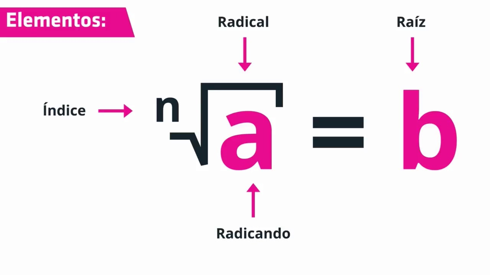
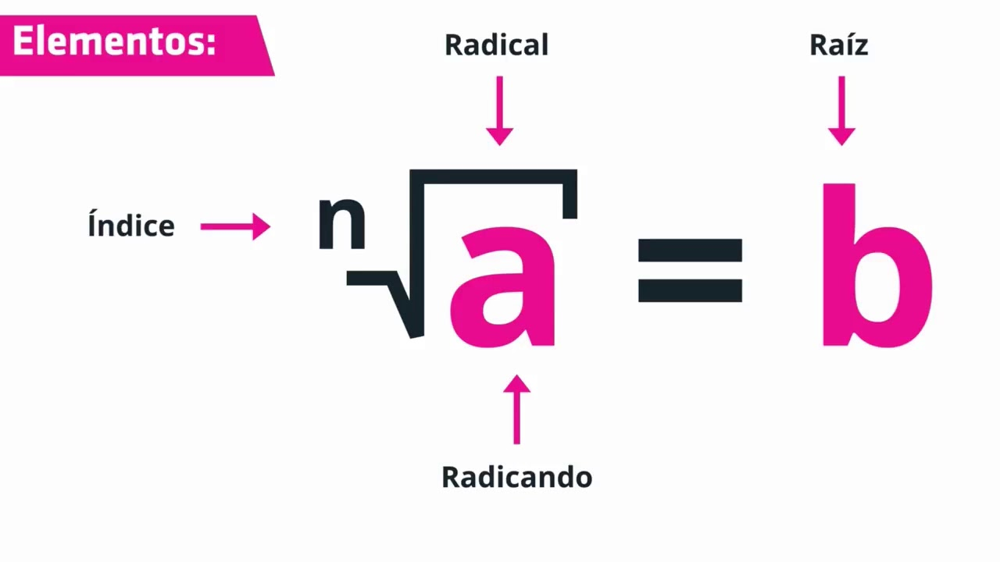

Matemáticas desempeñan un papel fundamental en la vida diaria de las personas y están presentes en una variedad de situaciones cotidianas. A continuacion mostrare un ejemplo de las matematicas en el dia a dia:
Finanzas personales: Las matemáticas son esenciales para realizar presupuestos, calcular ingresos y gastos, planificar ahorros, entender tasas de interés y tomar decisiones financieras informadas.
Compras: Al hacer compras, se utilizan conceptos matemáticos para calcular descuentos, tasas de impuestos, comparar precios y determinar cantidades.
Tiempo y programación: La gestión del tiempo implica conceptos matemáticos, como sumar, restar y medir. Además, la programación de actividades diarias o la gestión del tiempo de trabajo también se basa en conceptos matemáticos.
Geometría en el hogar: Al decorar o organizar el hogar, se aplican principios de geometría para asegurarse de que los muebles encajen correctamente, que las cortinas estén colgadas simétricamente, entre otros.
Medidas corporales y salud: En el ámbito de la salud, se utilizan medidas y cálculos matemáticos para monitorear el peso, calcular índices de masa corporal (IMC), entender mediciones de presión arterial y seguir pautas nutricionales.
En resumen, las matemáticas son una herramienta esencial que se utiliza de manera inconsciente en muchas actividades diarias, contribuyendo al funcionamiento efectivo de la vida cotidiana.
Por lo anterior mencionadaas matematicas basicas son algo que en toda tu vida vas a ver, no solo en tu trabajo, ya que desde que te despiertas, ya hay un poco de matematicas en tu dia.
Por eso hoy mismo te enseñare un poco de lo que la historia ha logrado descubrir sobre esta materia tan extensa e interesante.
Todo esta en las matematicas, Si tu solo supieras la magnificencia del 3, 6 y 9, entonces tienes la llave del universo
(Nikola Tesla)
Subtemas
Teorema de Tales
El primero de ellos explica esencialmente una forma de construir un triángulo semejante a partir de uno previamente existente ("los triángulos semejantes son los que tienen ángulos congruentes, deriva en que sus lados homólogos sean proporcionales y viceversa").
Mientras que el segundo desentraña una propiedad esencial de los circuncentros de todos los triángulos rectángulos («encontrándose estos en el punto medio de su hipotenusa»), a su vez en la construcción geométrica es ampliamente utilizado para imponer condiciones de construcción de ángulos rectos.
Si diversas rectas paralelas son intersecadas por dos transversales, los segmentos determinados por las paralelas y correspondientes entre transversales, son proporcionales.
Su formula es: AB/A'B' = BC/B'C' la cual se lee de la siguiente forma la linea entre A y B sobre la linea entre A prima y B prima es igual a la linea entre B y C sobre la linea entre B prima y C prima
Es una relación en geometría euclidiana entre los tres lados de un triángulo rectángulo.
Afirma que el área del cuadrado cuyo lado es la hipotenusa es igual a la suma de las áreas de los cuadrados cuyos lados son los catetos.
establece que en todo triángulo rectángulo, el cuadrado de la longitud de la hipotenusa es igual a la suma de los cuadrados de las respectivas longitudes de los catetos.
Su formula es: a^2+b^2=c^2 la cual se lee de la siguiente forma a cuadrada sobre b cuadrada es igual a c cuadrada
En matemática, la tangente es una función impar y es una función periódica de periodo con indeterminaciones en (pi) con indeterminaciones en (pi)/2+n(pi) y ademas una funcion trascendente de variable real.
Su nobre se abrevia de las dos sigueintes formas: tan y tg
En trigonometría, la tangente de un ángulo (de un triángulo rectángulo) se define como la razón entre el cateto opuesto y el adyacente
su formula para sacar angulos es: tan(angulo) = a/b = BC/OC = CO/CA la cual se lee de la siguiente forma el tangente del angulo es igual al cateto opuesto entre el cateto adyacente
En matemática, el seno es una de las seis funciones trigonométricas, llamadas también funciones circulares es una función real e impar cuyo dominio es el conjunto de los numeros reales y cuyo codominio es el intervalo cerrado
En trigonometría, el seno de un ángulo alpha de un triángulo rectángulo se define como la razón entre el cateto opuesto a dicho ángulo y la hipotenusa esta razon no depende del tamaño de triangulo rectangulo escogido sino que es una funcion
dependiente del angulo alpha
su formula para sacar angulos es: sen(angulo) = a/c = BC/AB = CO/H la cual se lee de la siguiente forma el seno del angulo es igual al cateto opuesto entre la hipotenusa
En matemáticas, el coseno es una función par y continua con periodo 2(pi), ademas una funcion trascendente. Su nombre se abrevia cos
En trigonometría, el coseno de un ángulo (alpha) de un triángulo rectángulo se define como la razón entre el cateto adyacente a dicho ángulo y la hipotenusa:
su formula para sacar angulos es: cos(angulo) = b/c = AC/AB = CA/H la cual se lee de la siguiente forma el coseno del angulo es igual al cateto adyacente entre la hipotenusa
son figuras que tienen 3 lados en los cuales existen 6 tipos de Triangulos los cuales son los equilateros, isoceles, escalenos, acutangulos, obtusangulos, rectangulos.
Equilatero: es un polígono regular, es decir, tiene sus tres lados iguales. En la geometría euclídea tradicional, los triángulos equiláteros también son equiangulares, es decir, los tres ángulos internos son iguales.
Isoceles: tiene dos lados de igual longitud. Al ángulo formado por lados de igual longitud se le denomina ángulo en el vértice y al lado opuesto a él, lado base.
Escaleno: Un triángulo escaleno es la forma más general de triángulo, de ahí que las consideraciones que sobre este tipo de triángulos se puedan hacer son las que sobre triángulos en general se pueden hacer.
Acutangulo: sus tres ángulos interiores son menores de 90°.
Obtusangulo: uno de sus angulos interiores es mayor a 90° y los otros 2 son menores a 90°
Rectangulo: triángulo que tiene un ángulo recto, es decir, un ángulo de 90 grados.
En geometría, un polígono es una figura geométrica plana compuesta por una secuencia finita de segmentos rectos consecutivos que encierran una región en el plano.
Estos segmentos son llamados lados, y los puntos en que se intersecan se llaman vértices.
Su formula para sacar el "PERIMETRO" es: P=L*NL el cual se lee de la siguiente forma: Perimetro es igual a un lado por el numero de lados del poligono
Y su formula para sacar el "AREA" es: A=(P*a)/2 el cual se lee de la siguiente forma: Area es igual al Perimetro por el apotema sobre/entre dos
En matemáticas, hacemos uso de cuatro operaciones básicas: la suma, la resta, la multiplicación y la división.
Suma: es la operación matemática de composición que consiste en combinar o añadir dos números o más para obtener una cantidad final o total.
Resta: es una operación matemática que consiste en sacar, quitar, reducir o separar algo de un todo.
División: se utiliza para calcular cuántas veces se divide un número (el dividendo) cabe en otro (el divisor) para obtener un resultado (el cociente) y un resto en caso de no ser exacta (el residuo).
Multiplicación: es una operación binaria y derivada de la suma que se establece en un conjunto numérico. Lo cual quiere decir que es una suma del mismo valor simplificada
Radicacion: la radicación es el proceso de hallar raíces de orden n de un número a. lo cual se refiere a que es el caso contrario de una exponenciación
Exponenciación: La potenciación o exponenciación es la operación que consiste en multiplicar el número llamado base por sí mismo las veces que indica el exponente. Cuando la base es negativa y el exponente par, la potencia es positiva, pero con exponente impar, la potencia es negativa.
El orden de las operaciones es una regla que indica la secuencia correcta de pasos para evaluar una expresión matemática. Podemos recordar el orden usando PEMDSR: Paréntesis, Exponentes, Multiplicación y División (de izquierda a derecha), Suma y Resta (de izquierda a derecha).

 
